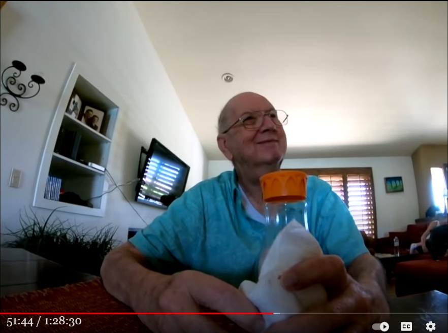

Jordan Maxwell が最晩年にフリーメーソンに加入した理由

最晩年のJordan Maxwell
手抜き
- Jordan Maxwell は最晩年になってフリーメーソンに加入した。 - フリーメーソンの正式な会員は第三階級からだが、彼は新参者だから一番下の階級（見習い扱い）であり、その意味では正式な会員ではなかった。 NH: 27:16 he actually had become a freemason at one point 27:21 he wanted to experience freemasonry and he wanted to experience what it was all 27:27 about and he did that possibly in the last few years of his life maybe brian knows more 27:33 about it than me but he had been given also a recognition for the high degrees 27:39 of the memphis and misery as i am i was made back in oslo of 1995 of the memphis and 27:47 israel is a series of high degrees that that include gnostic teaching theology and so on so 27:54 he he showed me these documents and then later he explained me a little 27:59 bit about the fact that he experienced freemasonry but he he was of course --- actually join if you say if leo says it in the in the past few years 29:05 with everything he knew about everything well that this was some years ago technically he's not a mason because you 29:12 have to be a third degree mason obviously before you become an official mason 29:17 and he was a first degree he joined the ionic composite lodge in 29:23 l.a off of pico and the reason why he did was this gentleman named dr harold 29:30 shire that passed away and i want to say 99 2 000 ish oh no no i'm 29:36 sorry maybe 2009 i think it was yeah that was right and um dr harold shire was for anybody動画(1:28:30)
LEO ZAGAMI & BRIAN VECCHIO ~ “The Order Of The New Dawn": JORDAN MAXWELL Tribute 2 [Age Of Truth TV]コメント1
- これは推測だが…。Jordan Maxwell は以下のヨタ話 (*1) を最晩年に至っても真に受けていたのだろう。・いつの日か、大理石で飾られた壮大なビルに招かれるだろう。そこで君は我々の敵になるか味方になるかの決断を迫られることになる。 ・その時は、その場での即答は不要だ。君が希望する期限を決め、その期限までに返事をすれば良い。君が決める期限が 6日後だろうが、6カ月後だろうが、6年後だろうが我々は全く気にしない。だが、期限がきたらどちらかを選択しなければならない。 ・そこで味方になると返事をすれば、君は有名人として雑誌の表紙や映画にも登場するような素晴らしい身分になる。だが、決断は慎重にせよ、死後の運命がその決断によって左右される。（死後に精神的な代償を支払うことになる…と私（Jordan Maxwell）は解釈した） ref: Jordan Maxwell : フリーメーソン評議会の最高位メンバーが私に予言した話。 (2020-02-09)- ところが、待てど暮せど一向に「大理石で飾られた壮大なビルに招かれ」ない。寿命は刻々と終わりに近づいている。そこで次のように考えたのかも。 ・彼らはもうこの話を忘れかけているのか？ だったら、こちらから声をかけて反応を見ようか。 - ところが、フリーメーソンに加入してみたものの、何も起きない。さぞ、落胆したことだろう。 - この動画でも彼の最晩年を看取ったふたりの友人が、「彼は陰謀論の大家だが、純真な子供のようにど他人を信じやすい面があり、生涯に渡って何度も騙され続け、その都度貴重な資産を失った」と口を揃えて証言している。 - Kerry Cassidy も別の動画で、以下のように証言している。- KC : Jordan Maxwell は ・豊富な洞察力とオカルト知識を持つ面と、 ・子供のように無邪気に相手を信じる面 を併せ持っていた。後者のために何度も騙され、裏切られていた。たとえば彼の Web 管理者が裏切って彼のコンテンツを持ち逃げした。 ref: Lucas Alexander ＋ Kerry Cassidy : Jordan Maxwell の生前の素顔を語る (2022-04-16)(*1)
- この最高位メンバーを自称する男の正体については別記事で扱っている（途中）。コメント2
- 私の Jordan Maxwell に関する一連の blog 記事から、私が Jordan Maxwell を侮蔑していると思われがちだが、それは誤解。私が侮蔑するのは騙す側。その被害者ではない。 - ただし、彼も意図せずに誤った解釈で聴衆を結果的に迷妄に導いてきたという面はある。精神世界のグルや講師の連中、そして民間の UFO 研究者/マニア の大半も同じ轍を辿って本心からの善意のつもりでヨタ話を吹聴している。まさに「地獄への道は善意で舗装されている」の諺どおり。 - Jardan Maxwell は善意の人であり、彼の生涯をかけたひたむきさには敬意を払っている。彼が純朴なゆえに騙され続けたことには同情している。彼の長い人生を賭けた追求も、それに付随する苦しみも、ようやく終わった。 - R.I.P. … Jordan Maxwell (2022-05-06)
初出
Jordan Maxwell は最晩年にフリーメーソンに加入した (2022-05-06)
この記事の完了度: